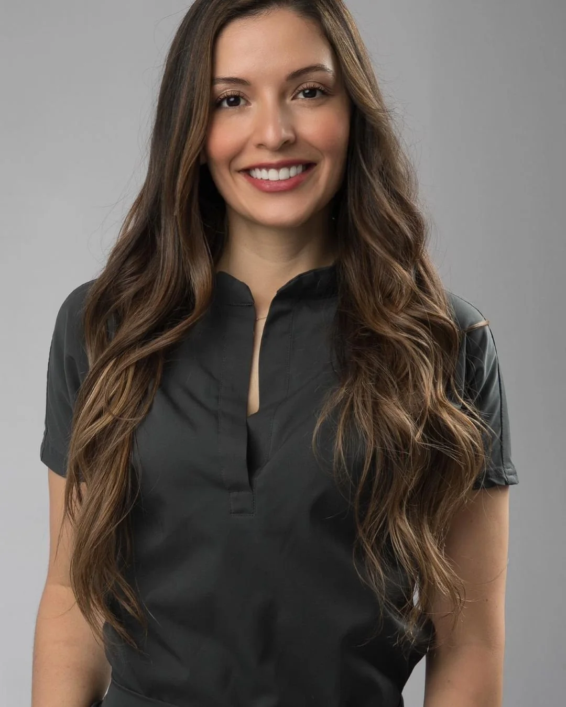

Good care. Better together.
Different specialties. One conversation about your care. Discover Beodonto and its approach to oral rehabilitation and aesthetics.

A smile has many sides.
Restore
Function and aesthetics, considered together.
Support
Gum health and support, assessed by the appropriate specialist.
Align
A separate conversation about alignment and follow-up.
Coordinate
The right specialist, the next appointment and a shared plan.
Explore how the areas connect. Your assessment defines which specialists you need.
ORAL REHABILITATION & AESTHETICS
A person first. A plan together.
Beodonto presents an interdisciplinary team led by Dra. Nohelia Márquez, focused on oral rehabilitation and aesthetics. The practice describes online assessment options for people outside Bucaramanga.
Official practice website ↗Let’s connect the dots.
?Can I begin from the US or Canada?+
Ask the team about an initial online conversation, available language support and the assessment process before planning a visit.
Will I need more than one specialist?+
That depends on the clinical assessment. The team explains which specialties should be involved and coordinates the next steps.
Does this website make a real booking?+
This is an independent design proposal. The booking experience is a demonstration and does not send information.
One conversation can bring it together.
Booking preview · no real appointment is reserved.
Carrera 34 #52-118 · Piso 1, consultorio 3 · Cabecera · Bucaramanga
WhatsApp +573183455873 ↗Official practice website ↗